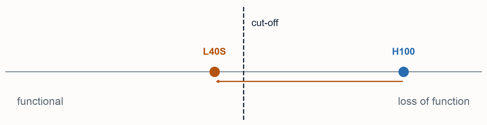
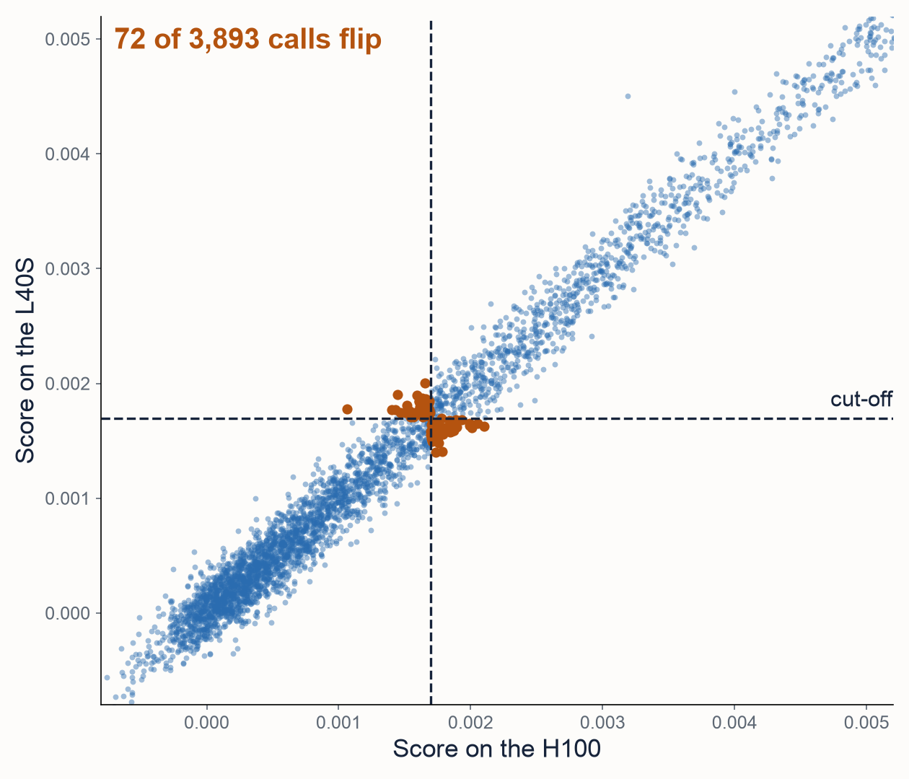
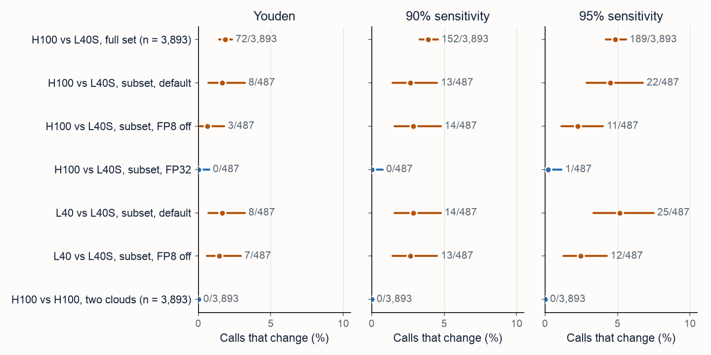
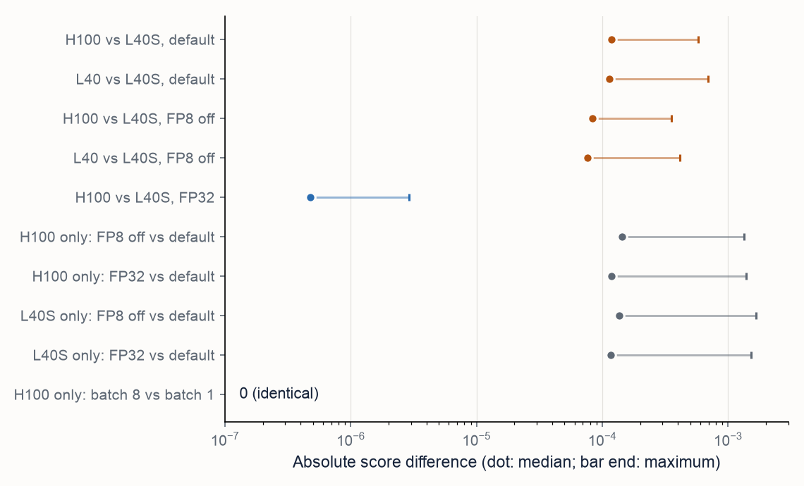

GPU drift: do Evo 2 calls change between GPU models?
Answer. Yes, for borderline variants. The same container, Evo 2 7B weights and inputs scored 3,893 BRCA1 SNVs on two H100 GPUs at two clouds and on an L40S. The two H100s gave bit-identical scores. The L40S scores differed by a median of 1.17e-4, which moved AUROC by only 0.0021 (95% interval 0.0002 to 0.0042) but changed 72 of 3,893 calls (1.8%, 1.4% to 2.3%) at a cut-off fitted on the H100, and up to 189 (4.9%) at more sensitive cut-offs. An L40 and an L40S, which share an architecture, disagreed as much. Computing in FP32 removed almost all of the difference, at 3 to 6 times the GPU time. Fix the GPU product and validate on it, or compute in FP32. The runs and the analysis are in rewire-bio/evo2-cloud-operations; the gpu-drift folder of this repository draws the charts and writes them up.
Design
flowchart TB
FIX["Held fixed<br/>one container image, pinned by digest<br/>Evo 2 7B weights, pinned by revision and SHA-256<br/>3,893 BRCA1 SNVs, 8,192 bp windows"]
subgraph MAIN["Main runs, 9 October 2026: all 3,893 variants"]
P2["P2: H100<br/>Google Cloud"]
P3["P3: H100<br/>Runpod"]
P5["P5: L40S<br/>Runpod"]
end
REP["Reproduction:<br/>each platform again<br/>on fresh machines"]
subgraph FU["Follow-up, 11 October 2026: 487 variants"]
FH["H100: default, FP8 off,<br/>FP32, batch 8"]
FL["L40S: default,<br/>FP8 off, FP32"]
FA["L40: default,<br/>FP8 off"]
end
CUT["Cut-offs fitted on the reference GPU's scores<br/>(H100; L40 for L40 pairs):<br/>Youden, 90% and 95% sensitivity"]
OUT["Score agreement, AUROC, and<br/>calls that change, with exact 95% intervals"]
FIX --> MAIN
FIX --> FU
MAIN --> REP
MAIN --> CUT
FU --> CUT
REP --> OUT
CUT --> OUT
How one call flips
flowchart TB
V["One BRCA1 SNV<br/>chr17:41276094:C>A"]
S["Score = reference window<br/>minus variant window,<br/>mean log-likelihood"]
H["H100 score 0.002101"]
L["L40S score 0.001625"]
T{"Cut-off 0.001698<br/>fitted on H100"}
CH["Above: loss of function"]
CL["Below: functional"]
V --> S
S --> H
S --> L
H --> T
L --> T
T -->|"H100: above"| CH
T -->|"L40S: below"| CL

The assay classes this missense variant as functional, so here the L40S happens to agree with it. Across all variants, flips run both ways: 41 called loss of function on the H100 only, 31 on the L40S only.
All variants



Findings
| Finding | Estimate | 95% interval | Status |
|---|---|---|---|
| H100 vs H100 (two clouds), and each platform against its own rerun | 0 differences in 3,893 scores | none (exact equality) | Not a test: identical |
| H100 vs L40S, median score difference | 1.17e-4 (Spearman 0.983) | not computed | Descriptive |
| H100 vs L40S, AUROC difference (L40S minus H100) | 0.0021 | 0.0002 to 0.0042 | Yes, but too small to matter |
| Calls that change, Youden cut-off | 72 of 3,893 (1.8%) | 1.4% to 2.3% | Estimate (nonzero; controls 0) |
| Calls that change, 90% sensitivity cut-off | 152 of 3,893 (3.9%) | 3.3% to 4.6% | Estimate (nonzero; controls 0) |
| Calls that change, 95% sensitivity cut-off | 189 of 3,893 (4.9%) | 4.2% to 5.6% | Estimate (nonzero; controls 0) |
| Same-GPU controls, calls that change | 0 of 3,893 at every cut-off | 0.0% to 0.09% (exact) | Not a test: identical |
| Follow-up: FP8 off, H100 vs L40S median difference | 0.70 of default | not computed | Exploratory |
| Follow-up: FP32, H100 vs L40S median difference | 4.77e-7, about 250 times smaller | not computed | Exploratory |
| Follow-up: FP32, calls that change (Youden, 90%, 95%) | 0, 0 and 1 of 487 | 0.0% to 0.8%, 0.0% to 0.8%, 0.0% to 1.1% | Exploratory |
| Follow-up: L40 vs L40S median difference | 1.13e-4, about the same as H100 vs L40S (1.19e-4) | not computed | Exploratory |
| Follow-up: batch 8 vs batch 1 on the H100 | 0 differences | none (exact equality) | Exploratory |
| Follow-up: FP32 GPU time | 5.8 times slower on H100, 3.4 on L40S | not computed | Exploratory |
What it means
- The GPU model is part of the method. Validate Evo 2 on the GPU product that will run it, and revalidate when it changes. The same architecture is not enough.
- Arc's forward test passed on every GPU, so it does not catch this.
- A call hides how close a variant was to the cut-off. Here 150 to 334 of 3,893 variants sat within one median GPU difference of a cut-off. Report a margin.
- If scores must depend as little as possible on the hardware, compute in FP32 and pay 3 to 6 times the GPU time.
Limits
- The cut-offs were fitted and applied on the same assay data. They are for counting flips, not clinical use.
- One gene, one model size (7B), one window length and three GPU products. Flip rates depend on how many variants sit near the cut-off.
- Same-model identity was shown for the H100 only.
- The follow-up used 487 variants, one machine per GPU, and was exploratory.
- The cause is inferred, not traced. The L40 and L40S have the same architecture and the same number of multiprocessors (142), and in the follow-up ran one image on one driver, so cuBLAS's conditions for identical results were met. Other kernels whose choice depends on the device (Transformer Engine, flash attention, Triton) are the likely source.
- Exact intervals treat variants as independent. Flips cluster slightly (189 flips at 165 positions at the 95% cut-off), so the intervals may be a little narrow.
Read more
- Paper (PDF), built from paper/paper.md
- README
- Code: flip_charts.py (slide charts) and paper/make_figures.py (paper charts)
- Runs and analysis: evo2-cloud-operations, including CLASSIFICATION-FLIPS.md and RESULTS.md